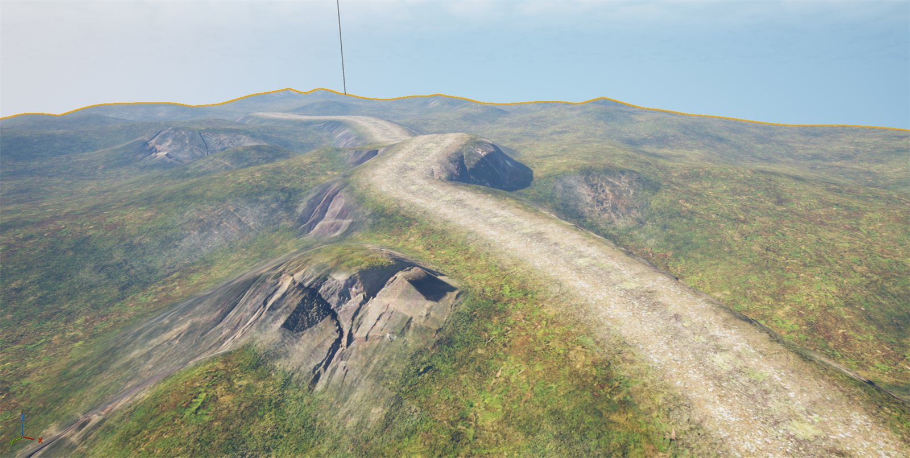

Procedural mesh baking and runtime virtual texture blending, and lots of cool things.
Baking to Static Mesh
I have devised a function that allows me to merge all of my procedural mesh chunks into one static mesh. This allows me to use a runtime virtual texture which captures the auto-material's texture and stores it, allowing me to write it to the mesh. This drastically reduces the shader complexity of the auto material as it doesn't have to recalculate every frame — only when the object's state has changed. This will provide a nice boost to the FPS and allow me to be able to blend meshes and other textures with the terrain seamlessly.
The function itself was taken partially from the private engine module "FProceduralMeshComponentDetails.cpp", which is used for editor-only functionality of baking a PMC and making it immediately available in the content browser. I adapted it for use with my chunk generation algorithm and removed the Slate UI and asset saving functionality.
Runtime Virtual Textures
The runtime virtual texture samples texture from the track and terrain so that they can be layered on top of one another. In the track material I create a mask around the texture, and then with some opacity tricks I fade the opacity from the centre of the texture sample outwards so that it appears to blend with the terrain. I adjust the translucency sort priority so that the track appears above the terrain's texture.
Struggles and Prevailing
This took me longer than I had originally anticipated, and at some points I thought the engine must have some sort of bug in it. I had an issue where my baked terrain was showing as completely black in Lit mode. It got weirder: when using an RVT with the track generated, the terrain mesh would appear black only when the track was not in the viewport. In Unlit mode the material was visible, which indicated to me that this was obviously to do with lighting — so potentially the normals on my mesh were invalid. This wasn't the case, as I could see through the normal buffer view that the normals looked fine. Absolute nightmare, because from everything I understood about PMC and static meshes this should work.
My next port of call was my bake function. Before this I had put it together by looking at forum posts and consulting with AI. I found out that PMC offered a bake-to-static-mesh function in the details panel, but this wasn't accessible in code and would need adapting to fit my chunk generation. I found the function and used it to create my own version that would combine all my chunks into one mesh. The issue was a multitude of things: I wasn't properly creating my UStaticMesh build settings with the correct flags, and I also wasn't creating the mesh description struct in the most efficient way either. A few other smaller order-of-precedence changes were also causing it to completely crash the editor, so I had to make sure my pipeline was rigid and what the engine expects.
The Fruits of my Labour
I have learned a lot about runtime asset creation and the rendering pipeline, which allowed me to correctly debug the issue and understand Unreal's complex architecture and sometimes awkward behaviour that stems from it. It led to me being able to have a very nicely blended track with my procedural track and terrain system that is also optimised for runtime use. Here is how it looks.
